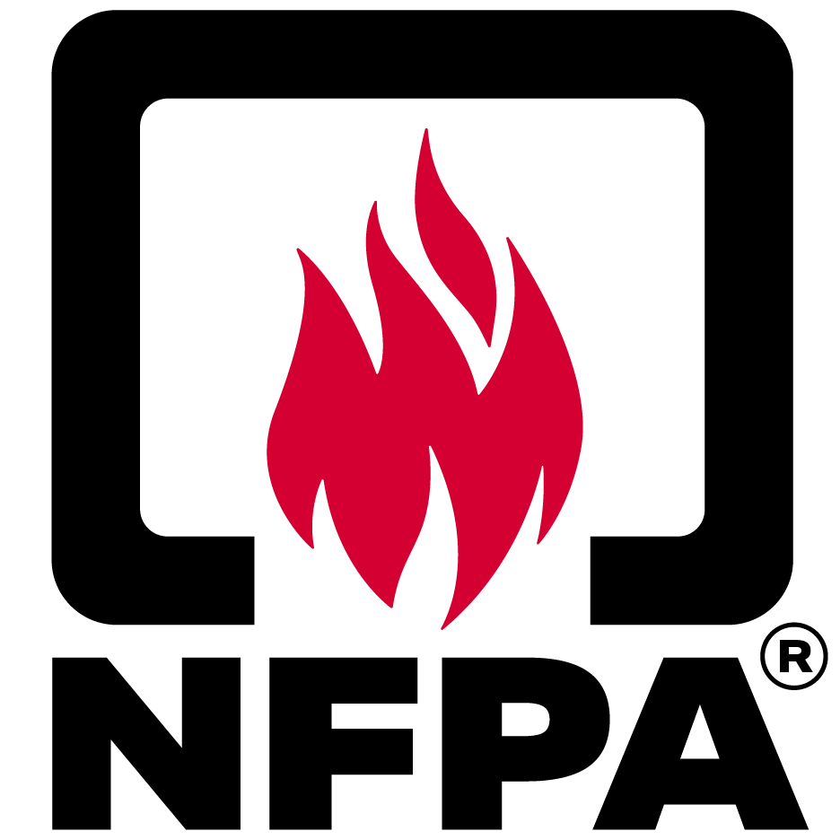
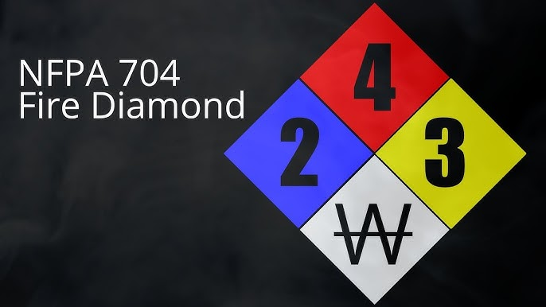
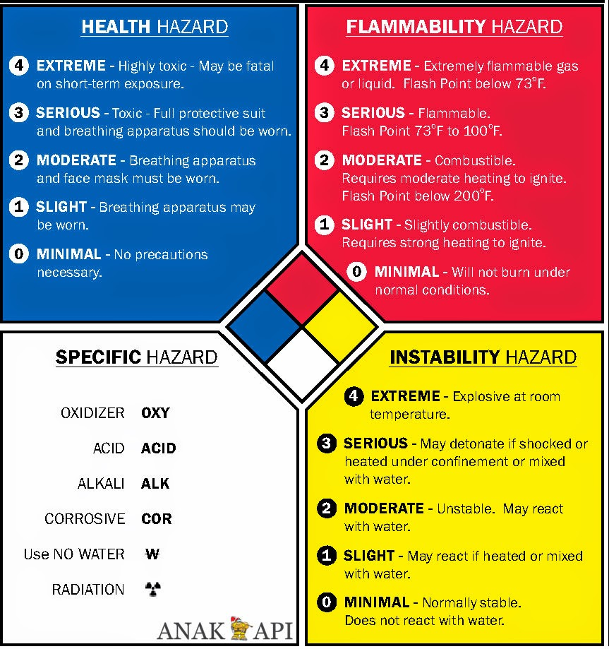

NFPA
NFPA (National Fire Protection Association) adalah sebuah organisasi internasional yang berdedikasi untuk mengurangi risiko kebakaran dan bahaya terkait lainnya. Didirikan pada tahun 1896, NFPA telah menjadi otoritas global dalam menetapkan standar keselamatan kebakaran. Standar-standar yang dibuat oleh NFPA mencakup berbagai aspek, mulai dari desain bangunan, sistem proteksi kebakaran, hingga prosedur evakuasi.
Mengapa NFPA Penting?
- Standar Global: Standar NFPA diakui secara internasional dan menjadi acuan bagi banyak negara dalam mengatur keselamatan kebakaran.
- Menyelamatkan Nyawa: Dengan mengikuti standar NFPA, risiko kebakaran dan kecelakaan dapat diminimalisir, sehingga dapat menyelamatkan banyak nyawa dan mengurangi kerugian material.
- Meningkatkan Keselamatan: Standar NFPA mencakup berbagai aspek keselamatan, mulai dari desain bangunan yang tahan api hingga prosedur evakuasi yang efektif.
- Mendukung Pertumbuhan Industri: Standar NFPA yang jelas dan konsisten menciptakan lingkungan bisnis yang lebih aman dan efisien.
Standar NFPA yang Populer
- NFPA 101: Kode Keselamatan Kebakaran untuk Bangunan dan Struktur
- NFPA 70: Natioanl Electrical Code (NEC)
- NFPA 30: Bahan Bakar Cair yang Mudah Menguap
- NFPA 400: Sistem Proteksi Kebakaran untuk Hazardous Materials
Bagaimana NFPA Bekerja?
NFPA bekerja dengan melibatkan berbagai pihak, seperti ahli teknik, petugas pemadam kebakaran, insinyur, dan perwakilan industri, untuk mengembangkan dan merevisi standar. Proses pengembangan standar NFPA melibatkan kajian mendalam terhadap data, penelitian, dan masukan dari berbagai pihak terkait.
Apa itu NFPA 704
NFPA 704 tentang Hazard Identification System menjadi standard global, termasuk di Indonesia dalam menetapkan system identifikasi bahaya yang berhubungan dengan bahan atau material.
NFPA 704 adalah sebuah standar internasional yang dikembangkan oleh National Fire Protection Association (NFPA) untuk memberikan informasi cepat dan mudah tentang tingkat bahaya yang ditimbulkan oleh bahan kimia. Standar ini sangat penting dalam dunia industri, laboratorium, dan tempat penyimpanan bahan kimia untuk memastikan keselamatan pekerja dan lingkungan sekitar.
NFPA 704 menetapkan jenis label yang melekat pada suatu bahan/material sehingga orang dapat dengan cepat dan mudah mengidentifikasi risiko yang ditimbulkan dari bahan/material berbahaya tersebut. Label ini juga berguna untuk menentukan, peralatan khusus yang harus digunakan, prosedur yang harus dilakukan, atau pencegahan apabila terjadi situasi darurat.
Simbol NFPA 704
Dalam aturan NFPA 704 Penyusunan simbol dibuat dalam bentuk belah ketupat yang terdiri atas 4 bagian. Keempat bagian masing-masing dilambangkan dengan warna: dengan warna biru sebagai bahaya kesehatan, merah sebagai tingkat terbakar, kuning adalah reaktivitas, dan putih untuk peringatan khusus. Tingkat kesehatan, terbakar dan reaktivitas dihitung dari skala 0 (tidak berbahaya) sampai 4 (sangat berbahaya).
Berikut penjelasan dari keempat bagian warna NFPA 704
| Tingkat | Kesehatan (Biru) | Terbakar (Merah) | Reaktivitas (Kuning) | Khusus (Putih) |
|---|---|---|---|---|
| 0 | Tidak menimbulkan bahaya kesehatan, tidak ada tindakan pencegahan yang diperlukan (misalnya, lanolin) | Tidak akan terbakar (misalnya, air) | Stabil, bahkan apabila terpapar dengan api, dan tidak bereaksi dengan air (misalnya, helium) | OX - Oksidan (misalnya, kalium perklorat, amonium nitrat, hidrogen peroksida) |
| 1 | Paparan hanya menyebabkan iritasi dengan luka residual kecil (misalnya, aseton) | Harus dipanaskan sebelum pembakaran terjadi (misalnya, minyak kedelai). Titik nyala di atas 93°C (200°F) | Stabil, namun dapat tidak stabil pada tekanan dan suhu tinggi (misalnya, propana) | W - Bereaksi dengan air dengan cara yang tidak biasa atau berbahaya (misalnya cesium, sodium, asam sulfat) |
| 2 | Paparan besar atau terus menerus tapi tidak kronis dapat mengakibatkan cacat sementara atau kemungkinan luka residual (misalnya, dietil eter) | Harus dipanaskan secara sedang atau dipaparkan ke suhu sekitar yang lebih tinggi sebelum pembakaran bisa terjadi (misalnya, diesel). Titik nyala 38°C (100°F) dan 93°C (200°F) | Mengalami perubahan kimia yang besar pada tekanan dan suhu tinggi, bereaksi keras dengan air, atau dapat membentuk campuran eksplosif dengan air (misalnya, fosfor, kalium, sodium) | Label putih dapat mengandung beberapa peringatan khusus. Simbol-simbol ini adalah yang digunakan oleh standar NFPA 704 |
| 3 | Sedikit paparan dapat mengakibatkan luka sementara atau luka residual sedang yang serius (misalnya, gas klorin) | Cairan dan zat padat yang dapat terbakar pada hampir semua kondisi suhu sekitar (misalnya, bensin). Cairan memiliki titik nyala dibawah 23°C (73°F) dan memiliki titik didih pada dan di atas 38°C (100°F) atau titik nyala 23°C (73°F) dan 38°C (100°F) | Dapat terjadi detonasi atau dekomposisi eksplosif namun membutuhkan sumber inisiasi yang kuat, harus dipanaskan di bawah penjagaan sebelum inisiasi, bereaksi eksplosif dengan air, atau akan meledak apabila "terkejut" (misalnya, amonium nitrat) | |
| 4 | Sangat sedikit paparan dapat mengakibatkan kematian atau luka residual parah (misalnya, hidrogen sianida, fosfin) | Dengan cepat atau sepenuhnya menguap pada suhu dan tekanan atmosfer normal, atau segara tersebar di udara dan akan mudah terbakar (misalnya, propana). Titik nyala dibawah 23°C (73°F) | Dapat terjadi detonasi atau dekomposisi eksplosif pada tekanan udara dan suhu normal (misalnya, nitrogliserin, RDX) |